OpenMSX-CD v3.1 is released
At the Bussum 2005 fair the latest version of
the openMSX-CD was introduced to the public. Due to technical
issues there were last minute upgrade trouble with the
creation of the binary packages for the CD. Since solving these
issues took up so much time, there wasn't any time left to
prepare any promotional material. No flyers, no posters, no free
openMSX-CD handouts. All that was visible at the openMSX stand
was a small handwritten piece of paper stating: "
openMSX-CD: Ask info here" This left the introduction of the
new CD pass by with little attention.
In order to correct this situation and give the non Bussum
visitors a change to learn about the new version this page is now
available.
This page will give you a quick overview of
Features of the CD
This CD is meant to be used on intel 586 compatible PC's.
You
can use it as an autoboot CD witch starts Linux and a lot of nice
openMSX related menu's, touches. Or you can place it in your
Windows(tm) PC and use the auto run feature.
win32 features
Linux
Extra boot options to
immediately start a certain MSX machine
Auto hardware detection and
configuration
Several splash screens during
boot (dependent on the day of the month)
Background music as soon as
the sound card is configured
An enhanced menu with a
custom database for software selection
Autorun feature with random
software selection in the menu for demo purposes
Scripts that allow regular users to remaster the content
of the openMSX-CD
A collection of freely available software can be found in the
openMSX/SOFTWARE directory.
This is the win32 autorun feature
in action.
It opens a browser with extra info and a menu to
install or run the win32 catapult/openMSX combo.
The windows autorun feature in action, displaying the info
page and the quick start menu.
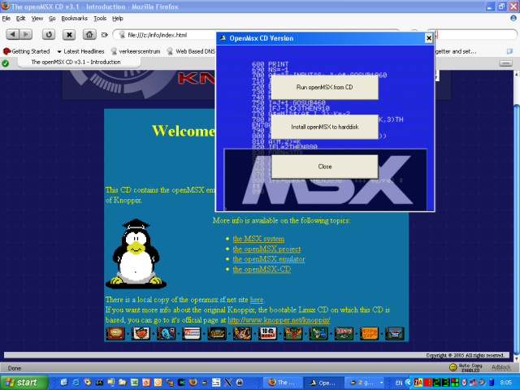
A short
tour of the booted CD
When you boot the CD this is the welcome screen
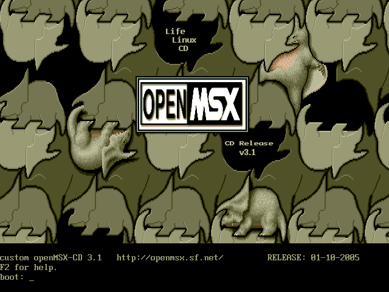
Pressing F2 introduces you to this little piece of text
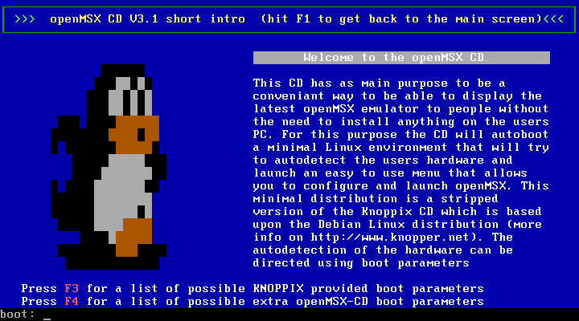
Since the openMSX-CD is Knoppix based most Knoppix boot
parameters are valid, but some special ones are created for this
CD.
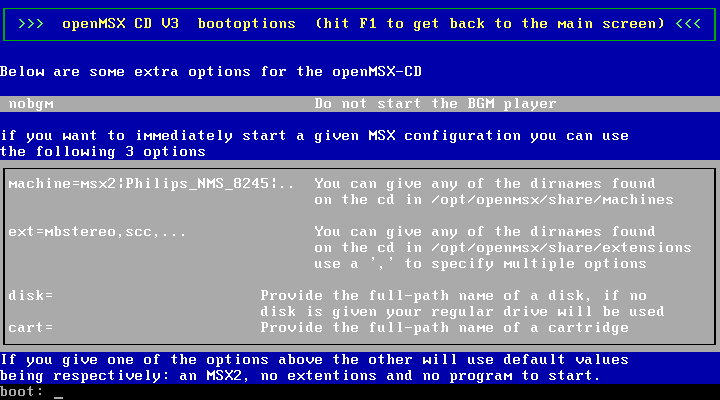
When the actual Linux kernel is booted you'll see the
following text.
Notice that the font is altered into a certain
other font type that we all know and love (thanks to Manuel
Bilderbeek for creating the console font) Thanks to changes in
the hardware detection scripts, you will get some nice random
background music as soon as the sound hardware is configured.
Click here to obtain some of the included midi
files.
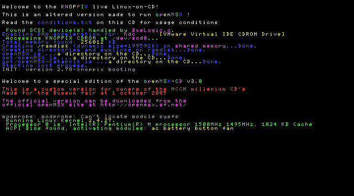
Once the graphical environment is launched you can pick
your preferred openMSX launcher. Since openMSX-CD v3.1 the Cd now
also includes some nice pictures of (most of) the main openMSX
developers.
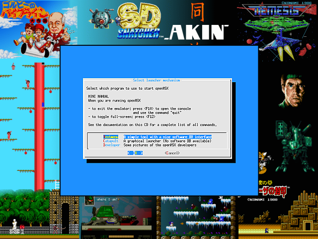
If you want to know what the developers look like,just
pick one of the names at this image.
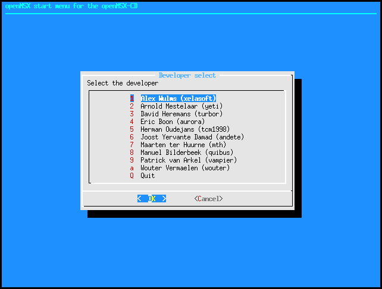
If you choose Catapult then you'll see that a nice Blackbox
window manager is started and that the Linux version of catapult
is shown. Closing the Catapult window will shutdown the
openMSX-CD.
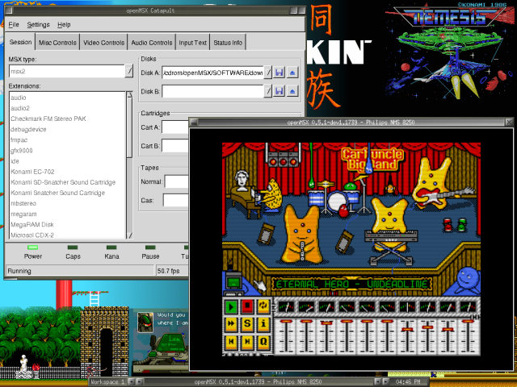
If you choose the (for the CD) more apropriate text menu
you'll end up in this screen. But first a small introduction text
is shown
After this the real text based menu is shown
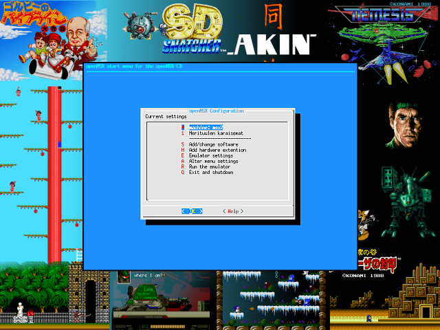
Altering the menu settings allows you to alter stuff like
the time out of the menu's. Set this to an insane high number if
you do not want this to happen.
Menu checks for TCL scripts:
Some programs on this CD contain an extra script to automate
certain behavior when running. For instance the Sphere demo will
be run and automatically the second disk will be inserted by the
tcl script, and to speed up the loading the setting 'throttle
off' will be enabled during the load time of the demo.
Display
readme.1st files: When launching programs the menu will look if
there is an accompanying text file for the program, and display
this file before the actual emulation starts.
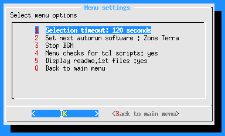
By using the software DB of you can drill down your
selection by using a combination of several criteria, as shown
below.
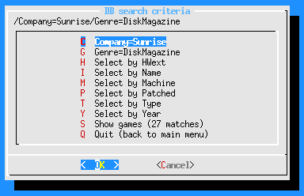
And this is the result of the selection.
Note that by
using the DB the menu will warn you if you have selected the
wrong msx type or extensions. You can replace your current
selection by the settings in the database, or select item by item
if you want to keep your current selection instead of the default
settings suggested by the database. For instance the database
could suggest an MSX2 when you selected Nemesis 3, but you do not
want to see the color cycling so you prefer to keep the selected
msx1 model. Or you absolutely want to hear Aleste only with PSG
music and refuse to have the FM-PAC extension added.
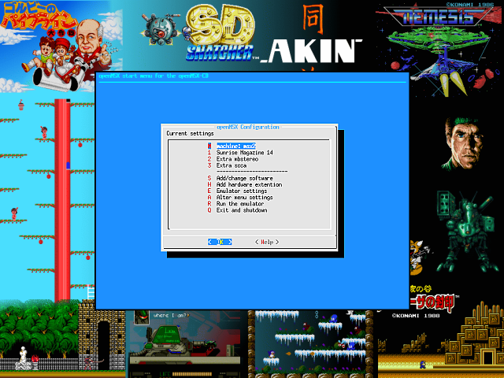
Where to get the
CD ?
For the moment the CD isn't available online.
If you want
to obtain a copy, contact the openMSX team at the next MSX fair,
or mail me at "dhran @ scarlet . be"
The current openMSX-CD is still based
upon Knoppix 3.7 and thus still uses the old gnu c++ ABI, the
latest version of openMSX 0.5.2 triggered some compiler bugs, but
compiling it with a newer gcc caused the new binary to use the
new ABI, thus making it segfault since the libraries still used
the old ABI.
|
{kind=link}
{kind=link}
{kind=link}
{kind=link}
{kind=link}
{kind=link}
{kind=link}